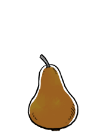

bosc pear
Bosc pears, or Beurre Bosc, is a cultivar of Pyrus communis. It was named after Louis Bosc, a french horticulturist. Bosc pears have a long tapering neck and a warm brown color. Its flesh is white and crisp, and has a sweet juicy flavor.
The best wat to know if a Bosc pear is ripe, is when the top part of the fruit becomes wrinkly. This variety of pear is also perfect for poaching (cooking while submerged in liquid), broiling and baking, because they've got firm and solid flesh and keep their form in cooking.
pears
Pears are the fruit of the pear tree, a species of genus Pyrus. Most pears are cold-hardy, withstanding temperatures between -25C and -30C in winter. There are many species of pears, ranging in size, shape and color. They are a source of vitamin c.
They will keep up to 3 weeks when stored in the refrigerator and a little over 1 year if frozen. Pears ripen at room temperature. They will ripen faster if placed next to bananas in a fruit bowl.